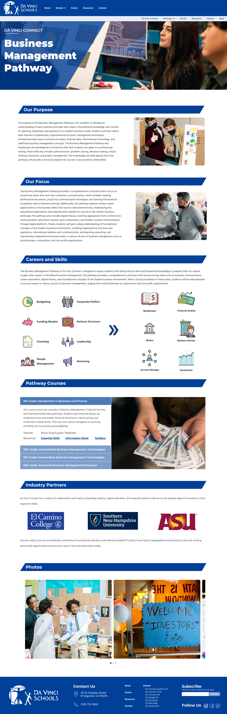
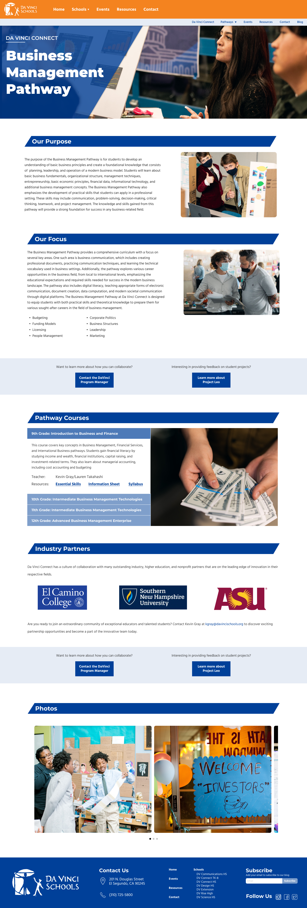

For Da Vinci, they wanted to create landing pages for each of their different pathways. The goal of each page was to showcase the curriculum and what parents or students could expect if they enrolled in that pathway. These pages went through several iterations based on what the stakeholders wanted the site to convey. Below is the first draft of a high-fi mockup for the Da Vinci Business Management pathway in the Da Vinci Connect school.
A big focus at Da Vinci Schools is how skills translate into careers, so a Careers and Skills section was included in the design. Upon further collaboration, the stakeholders decided that they wanted to focus more on sponsors and industry partners. This involved removing the Careers and Skills section, and add Call To Action buttons for companies or individuals to contact the Program Manager to collaborate. Da Vinci was also working on Project Leo, so they wanted a Call To Action button to promote that, as well. Below is the final mockup.
I created site mockups for 11 different pathways witin Da Vinci's 4 different schools.
